Getting Started Tutorial#
This page should provides detailed instruction on instalation and basic usage of the TSADAR code.
Installation#
Clone the github repo to the local or remote machine where you will be running analysis.
Install using the commands bellow, or following your prefered method.
conda env create -f env_gpu.yml
conda activate tsadar-gpu
conda env create -f env.yml
conda activate tsadar-cpu
python --version # hopefully this says >= 3.9
python -m venv venv # make an environment in this folder here
source venv/bin/activate # activate the new environment
pip install -r requirements.txt # install dependencies
Importing raw data#
{kind=link}
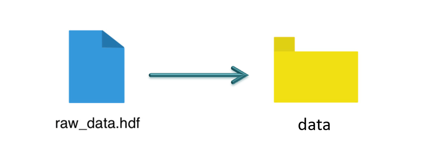
Once you have created a virtual environment, you should add your raw data, which should be a .hdf file into the provided data folder located in your instalation.
Input decks#
The code uses two input decks, which are located in inverse-thomson-scattering/configs/1d. The primary input deck inputs.yaml contains the commonly altered parameters. The secondary input deck defaults.yaml contains additional options that tend to remain static. Please note, any parameters in inputs.yaml will override the secondary input deck when values conflict. More information on the specifics of each deck can be found by clicking the cards bellow.
Primary input deck
Secondary input deck
Experiment information#
Indicate the shotnumber of the experiment in the Input.yaml deck. The code will identify the type of Thomson data (temporal or spatial) for OMEGA experiments, based off the data file. For fitting data files from other sources, please contact the authors.
data:
shotnum: 101675
lineouts:
type:
pixel
Fitting time resolved EPW#
Load the electron spectra, and activate the EPW fit by setting the corresponding booleans to True.
other:
extraoptions:
spectype: true
load_ion_spec: False
load_ele_spec: True
fit_IAW: False
fit_EPWb: True
fit_EPWr: True
Fitting time-resolved IAW#
Load the ion spectra, and activate the IAW fit by setting the corresponding booleans to True.
other:
extraoptions:
spectype: true
load_ion_spec: True
load_ele_spec: False
fit_IAW: True
fit_EPWb: False
fit_EPWr: False
Background and lineout selection#
There are multiple options for background algorithms and types of fitting. The following tend to be the best options for various data types. All of these options are specified using the input deck.
background:
type:
pixel
slice: 900
background:
type:
fit
slice: 900 <or backrgound slice for IAW>
background:
type:
fit
slice: <background shot number>
lienouts:
type:
range
start: 90
end: 900
skip: #
background:
type:
fit
slice: <background shot number>
Fitting a new data set#
For fitting a new data set, it is recomended to start by fitting a small region of the data using a small number of lineouts. The fit will start at lineout:start and will end at lineout:end. Lineouts will be fit every lineout:skip of the unit type defined.
data:
shotnum: 1234567
lineouts:
type:
pixel
start: 100
end: 900
skip: 10
background:
type:
pixel
slice: 900
Adjusting parameters#
Set up the input decks to best fit your data. val sets the initial value for the first iteration, or the static value of unfit parameters. These values are bounded by lb and ub indicating the lower and upper bound respectively.
parameters:
species1:
type:
electron:
active: False
Te:
val: .6
active: True
lb: 0.01
ub: 1.25
The secondary imput deck, contains the minimum and maximum values for the blue and red shifts.
data:
shotnum: 1234567
shotDay: False
launch_data_visualizer: True
fit_rng:
blue_min: 460
blue_max: 510
red_min: 545
red_max: 600
Run modes#
Code outputs are packaged using MLFlow, each run should be individualy named in the input deck. The experiment field is a folder and can be used to group runs.
mlflow:
experiment: folder1
run: name of the run
Once you have adjusted the parameters and saved the changes made, you will want to implement the run command. There are two run “modes”.
Fit mode perfoms the fitting procedure producing plasma conditions from the data.
python run_tsadar.py --cfg <path>/<to>/<inputs>/<folder> --mode fit
Forward mode performs a forward pass and gives you the spectra given some input parameters. Additionally, it can produce spectra for a series of plasma conditions.
python run_tsadar.py --cfg <path>/<to>/<inputs>/<folder> --mode forward
Output visualization#
To visualize the outputs run the following commnand, and follow the resultant link. The resulting plots can be found in the Artifacts unedr the folder plots.
mlflow ui

Fit and data plots#
Fit and data plots show a side by side of the fit and data, which can be used to evaluate the quality of the fit.
{kind=link}
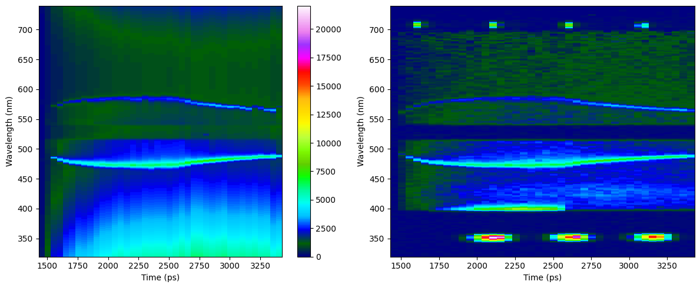
{kind=link}
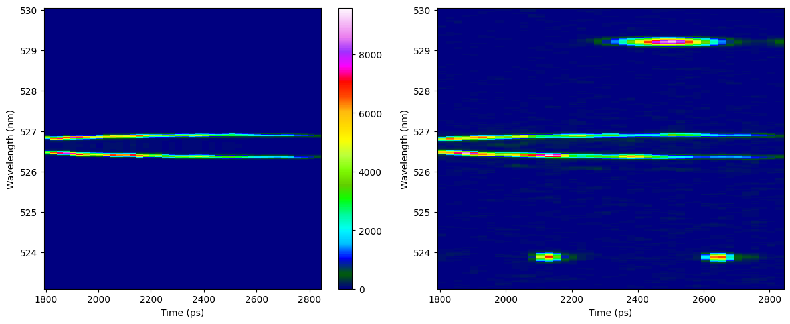
Fit ranges plots#
Fit and ranges Plots use lines to indicate the region where data is being analyzed.
{kind=link}
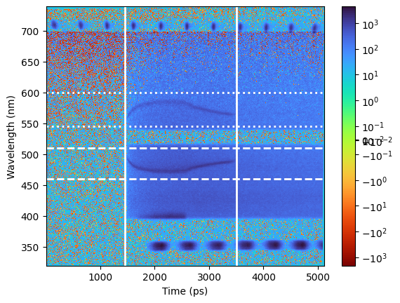
{kind=link}
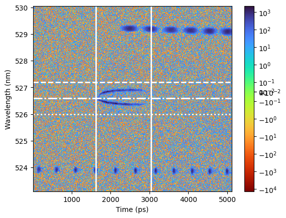
Best and worst plots#
Best and wost plots display the lineouts where the free parameters for the analysis best and wort match those of the data. These plots can be used ot determine how to alter input conditions. The second image
Best plots

{kind=link}
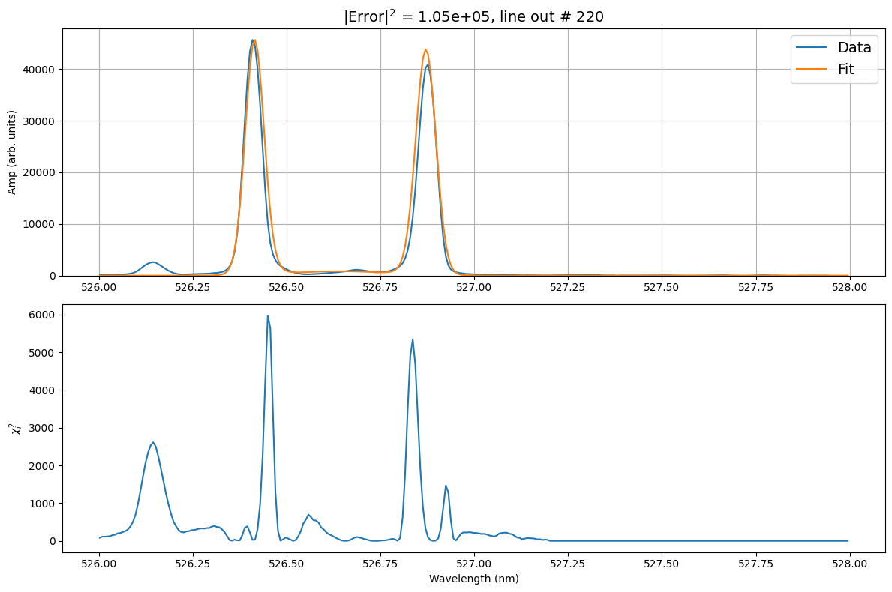
Worst plots
{kind=link}
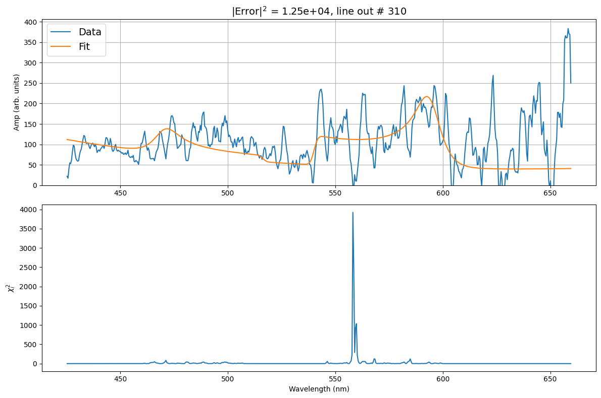
{kind=link}
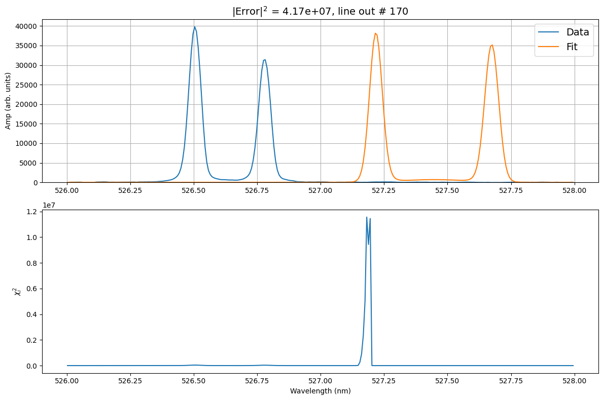
Learned parameters#
Learned parameters contain the fitted parameters for every lineout. These can be downloaded to further analyse individual lineouts.
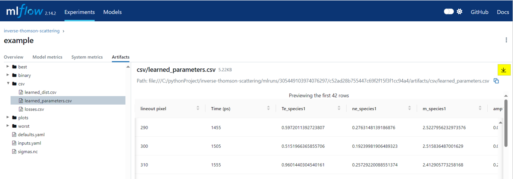
Learned parameters plots#
The variation of individual parameters throughout the linouts is shown in their respective learned plots.
{kind=link}
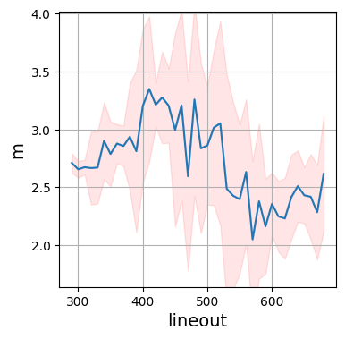
{kind=link}
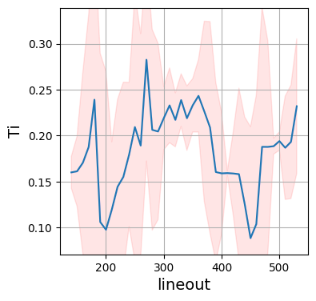